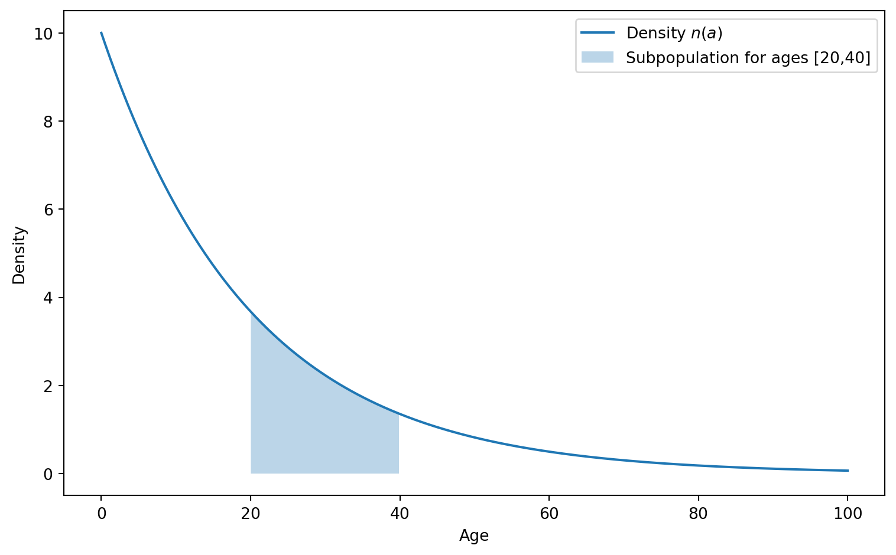
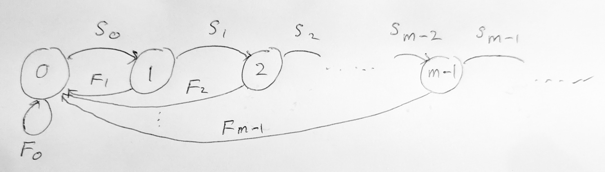
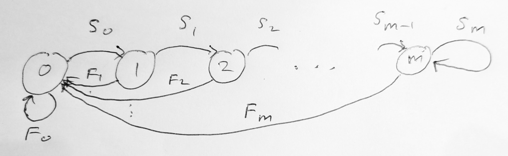
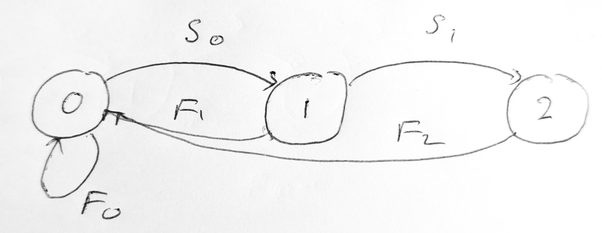

5 Age-structured population model
In the previous chapter we structured the population by a discrete variable, the sex of the individuals. This gave rise to a system of coupled ODEs, one ODE for each class of individuals. In this section we will structure the population by a continuous variable, the age of the individuals. In the continuous-time model this will give rise to a partial differential equation (PDE) for the age-dependent population density. We will discuss that PDE in Section 5.2. But first, in Section 5.1, we will discuss the discrete-time model, where also age is discrete. This will give rise to a system of coupled difference equations, one equation for each age class.
Learning Objectives
By the end of this chapter, you should be able to:
- Understand how age structure affects population dynamics in both discrete and continuous time models
- Formulate and analyze discrete-time age-structured models using Leslie matrices
- Solve the McKendrick-von Foerster equation for continuous-time age-structured populations
- Apply the condition for population persistence or extinction based on the reproductive number
- Determine the stable age distribution and long-term growth factor of a population
- Derive and interpret the Euler-Lotka equation for both discrete and continuous time models
5.1 Discrete time model
As we discussed in Chapter 2, a discrete-time model is the natural choice if reproduction is an annual event, taking place in a short breeding season for example. We will now introduce a discrete-time age-structured population model. We will derive the model and then study the long-term behaviour of the population and its age distribution.
5.1.1 Model description
Both time and age will be discrete variables. We will take them to be integers counting years. We will describe the population by the numbers \(N_{a,t}\) of individuals of age \(a\) at time \(t\), with \(a\) and \(t\) both integers and \(a\geq 0\). The total number \(N_t\) of individuals in the population at time \(t\) is then given by the sum of \(N_{a,t}\) over all ages.
The parameters of our model will be the probabilities \(S_a\) of surviving from age \(a\) to age \(a+1\) and the number of offspring \(b_a\) produced by an individual when they reach age \(a\). Because the number of individuals at age \(a\) at time \(t+1\) is the number of individuals that a year earlier were at age \(a-1\) and have survived to age \(a\), we have \[ N_{a,t+1} = S_{a-1} N_{a-1,t} \tag{5.1}\] for \(a=1,2,\dots\).
When individuals reach age \(a\), they each produce \(b_a\) offspring. The total number of offspring produced at time \(t\) is therefore obtained by summing over all ages \(a\) the number of individuals at age \(a\) at time \(t\) times the number of offspring produced by an individual of age \(a\): \[ N_{0,t} = \sum_{a=1}^\infty b_a N_{a,t}. \tag{5.2}\]
In Eq. 5.2 both sides of the equation are at time \(t\). That is because reproduction is taken to happen instantaneously at the start of year \(t\). It is conventional to use Eq. 5.1 to rewrite Eq. 5.2 as an equation for \(N_{0,t+1}\): \[ N_{0,t+1} = \sum_{a=1}^\infty b_a N_{a,t+1}= \sum_{a=1}^\infty b_a S_{a-1} N_{a-1,t} = \sum_{a=1}^\infty F_{a-1} N_{a-1,t}, \tag{5.3}\] where we have introduced the fecundity \[ F_a:=b_{a+1} S_{a}. \]
Eq. 5.1 and Eq. 5.3 are the equations for the discrete-time age-structured population model. They are a system of coupled difference equations, one equation for each age class. Let us write them out again more explicitly: \[ \begin{split} N_{0,t+1}&=F_0 N_{0,t}+F_1N_{1,t}+\cdots +F_{m-1}N_{m-1}+F_{m}N_{m}+\cdots, \\ N_{1,t+1}&=S_0 N_{0,t}, \\ N_{2,t+1}&=S_1 N_{1,t}, \\ &\vdots \\ N_{m-1,t+1}&=S_{m-2} N_{m-2,t}, \\ N_{m,t+1}&=S_{m-1} N_{m-1,t}, \\ &\vdots \end{split} \tag{5.4}\] Annoyingly, the equation for \(N_{0,t+1}\) couples all these infinitely many equations together. We would like to solve these coupled equations to determine the numbers \(N_{a,t}\) of individuals at each age at each time, given the initial numbers \(N_{a,0}\) for all ages \(a\) at time \(t=0\). This can generally not be done analytically.
5.1.2 Leslie matrix
So far we have dealt with an infinite set of age classes. However there are two situations where we can reduce the infinite set of equations Eq. 5.4 to a finite set. In those cases we can rewrite the equations in matrix form and analyse them using matrix algebra.
The first situation where only a finite number of equations is coupled together is when there is a maximal age \(m\) beyond which there is no reproduction, either because \(b_a = 0\) for \(a>m\) or because there are no older individuals because \(S_{m} = 0\). In this case we can collect the equations for \(N_{a,t+1}\) for \(a=0,1,2,\ldots,m-1\) into the matrix equation \[ \begin{pmatrix} N_{0} \\ N_{1} \\ N_{2} \\ \vdots \\ N_{m-1} \end{pmatrix}_{t+1} = \begin{pmatrix} F_0 & F_1 & \cdots & F_{m-2} & F_{m-1} \\ S_0 & 0 & \cdots & 0 & 0 \\ 0 & S_1 & \cdots & 0 & 0 \\ \vdots & \vdots & \ddots & \vdots & \vdots \\ 0 & 0 & \cdots & S_{m-2} & 0 \end{pmatrix} \begin{pmatrix} N_{0} \\ N_{1} \\ N_{2} \\ \vdots \\ N_{m-1} \end{pmatrix}_{t}. \tag{5.5}\] The matrix on the right-hand side is called the Leslie matrix.
We can represent this Leslie matrix with the directed graph in Figure 5.1. The graph has one node for each age class \(a=0,1,2,\ldots,m-1\) and a directed edge from node \(i\) to node \(j\) if and only if the Leslie matrix has a non-zero entry in column \(i\) and row \(j\). The graph is called the Leslie graph.

Note that we did not need to include the age class \(m\) because it is not needed to calculate the reproduction because \(F_m=b_{m+1}S_{m}=0\). Once the matrix equation Eq. 5.5 is solved, we can determine \(N_{m,t+1}\) separately from Eq. 5.1 if we are interested, and similarly for all older age classes that do not reproduce, if any.
Let us denote the Leslie matrix by \(L\). The equations Eq. 5.5 and Eq. 5.12 are matrix equations of the form \[ \mathbf{N}_{t+1} = L\, \mathbf{N}_t, \tag{5.6}\] where \(\mathbf{N}_t\) is the column vector of the numbers \(N_{a,t}\) and \(L\) is the Leslie matrix.
Example 5.1 Consider a population with the reproduction numbers \(b_a\) and the survival probabilities \(S_a\) given in the following table:
| \(a\) | \(b_a\) | \(S_a\) | \(F_a\) |
|---|---|---|---|
| 0 | 0 | 1 | 0 |
| 1 | 0 | 1/2 | 1/2 |
| 2 | 1 | 1/2 | 1 |
| 3 | 2 | 1/2 | 0 |
| 4 | 0 | \(\vdots\) | \(\vdots\) |
| 5 | \(\vdots\) | \(\vdots\) | \(\vdots\) |
The final column in that table is calculated from the previous ones using \(F_a:=b_{a+1}S_{a}\). In this example the maximum age \(m\) beyond which there is no reproduction is \(m=3\). Hence the corresponding Leslie matrix is a \(3\times 3\) matrix. It is given by \[ L = \begin{pmatrix} F_0&F_1&F_2 \\ S_0 & 0 & 0 \\ 0 & S_1 & 0 \end{pmatrix}=\begin{pmatrix} 0 & 1/2 & 1 \\ 1 & 0 & 0 \\ 0 & 1/2 & 0 \end{pmatrix}. \tag{5.7}\]
Assume that the at time \(t=0\) we only have 10 individuals all of age 0, i.e., \[ \mathbf{N}_0 = \begin{pmatrix} 10 \\ 0 \\ 0 \end{pmatrix}. \tag{5.8}\] We can then calculate the numbers at the following times \(t=1,2,3,\ldots\) by repeated multiplication by the Leslie matrix \(L\): \[ \mathbf{N}_1 = L \mathbf{N}_0 = \begin{pmatrix} 0 & 1/2 & 1 \\ 1 & 0 & 0 \\ 0 & 1/2 & 0 \end{pmatrix} \begin{pmatrix} 10 \\ 0 \\ 0 \end{pmatrix} = \begin{pmatrix} 0 \\ 10 \\ 0 \end{pmatrix}, \] \[ \mathbf{N}_2 = L \mathbf{N}_1 = \begin{pmatrix} 5 \\ 0 \\ 5 \end{pmatrix}, ~~~ \mathbf{N}_3 = L \mathbf{N}_2 = \begin{pmatrix} 5 \\ 5 \\ 0 \end{pmatrix}, \cdots. \tag{5.9}\] Continuing like this (using a computer) we observe that the population converges to a stable age distribution. \[ \lim_{t\to\infty}\mathbf{N}_t = \begin{pmatrix} 4 \\ 4 \\ 2 \end{pmatrix}. \tag{5.10}\] This means that the population will eventually consist of \(4\) individuals of age \(0\), \(4\) individuals of age \(1\), and \(2\) individuals of age \(2\). We can calculate the number of older individuals as follows \(N_{3,t} = S_2 N_{2,t} = 1, N_{4,t}=S_3N_{3,t}=1/2,\cdots\) as \(t\to\infty\).
The other situation where we only need a finite number of age classes is where the survival probabilities and the reproduction numbers are constant for all ages above a certain age \(m-1\). We can then collapse all individuals of age \(m\) or larger into the same age class \(m\). The survivors from age class \(m\) are thus put back into the same age class \(m\). This modifies the equation for \(N_{m,t+1}\) to \[ N_{m,t+1} = S_{m-1} N_{m-1,t} + S_{m} N_{m,t}. \tag{5.11}\] In this case we can write the model as a matrix equation of the form \[ \begin{pmatrix} N_{0} \\ N_{1} \\ N_{2} \\ \vdots \\ N_{m} \end{pmatrix}_{t+1} = \begin{pmatrix} F_0 & F_1 & \cdots & F_{m-1} & F_{m} \\ S_0 & 0 & \cdots & 0 & 0 \\ 0 & S_1 & \cdots & 0 & 0 \\ \vdots & \vdots & \ddots & \vdots & \vdots \\ 0 & 0 & \cdots & S_{m-1} & S_m \end{pmatrix} \begin{pmatrix} N_{0} \\ N_{1} \\ N_{2} \\ \vdots \\ N_{m} \end{pmatrix}_{t}. \tag{5.12}\] Now \(N_{m,t}\) is the number of all individuals of age \(m\) or older at time \(t\). We can represent this Leslie matrix with the graph in Figure 5.2 .

5.1.3 Stable age distribution
The phenomenon that we observed in Example 5.1 that the age distribution settles down to a stable age distribution as time goes on is a general phenomenon. To understand it we will now look for a solution such that \[ N_{a,t+1} = \lambda N_{a,t} \tag{5.13}\] This is a solution in which the age distribution remains stable from one year to the next, but the total population grows or shrinks by a factor \(\lambda\) each year. It was untypical that in Example 5.1 we had \(\lambda=1\) so that the population neither grew nor shrank.
For \(a=1\) Eq. 5.13 gives \[ N_{1,t+1} = \lambda N_{1,t} = S_0 N_{0,t} \tag{5.14}\] and hence \[ N_{1,t} = \frac{S_0}{\lambda} N_{0,t}. \tag{5.15}\] Similarly we can express \(N_{2,t}\) in terms of \(N_{0,t}\): \[ N_{2,t} = \frac{S_1}{\lambda} N_{1,t} = \frac{S_1 S_0}{\lambda^2} N_{0,t}. \tag{5.16}\] We can continue this process to express \(N_{a,t}\) in terms of \(N_{0,t}\): \[ N_{a,t} = \frac{S_{a-1}S_{a-2}\cdots S_0}{\lambda^a} N_{0,t}= \frac{l_{a}}{\lambda^a} N_{0,t} \tag{5.17}\] where \[ l_a:=S_{a-1}S_{a-2}\cdots S_0. \tag{5.18}\] is the probability of surviving from age \(0\) to age \(a\).
Substituting Eq. 5.17 into Eq. 5.2 for the newborns gives \[ N_{0,t} = \sum_{a=1}^\infty b_{a} N_{a,t} = \sum_{a=1}^\infty b_{a} \frac{l_{a}}{\lambda^{a}} N_{0,t}. \tag{5.19}\] Dividing the equation by \(N_{0,t}\) gives \[ 1 = \sum_{a=1}^\infty b_a \,l_a\,\lambda^{-a} =:\psi(\lambda). \tag{5.20}\] This is the Euler-Lotka equation for the population growth factor \(\lambda\) in the stable age distribution. Once we have solved it to determine \(\lambda\), we can use Eq. 5.13 to determine the stable age distribution, \[ N_{a,t} = \lambda^{t-a}l_{a} N_{0,0}. \tag{5.21}\] Unfortunately solving the Euler-Lotka equation analytically is normally not feasible. You will however find a solvable example in Exercise 5.1 below.
5.1.4 Condition for extinction
Luckily we do not need to solve the Euler-Lotka equation in order to determine whether the population grows or goes extinct. We note that \[ \psi(1)=\sum_{a=1}^\infty b_a \,l_a=:R \tag{5.22}\] is the expected number of offspring produced by an individual during its lifetime. This quantity is known as the reproductive number. If this reproductive number is greater than \(1\), then the population grows exponentially. If it is less than \(1\), then the population goes extinct. The way to see this from the Euler-Lotka equation Eq. 5.31 is to note that \(\psi(\lambda)\) is a decreasing function of \(\lambda\). This means that there is a unique solution \(\lambda\) to the Euler-Lotka equation and
If \(R>1\) then \(\lambda>1\) and population grows exponentially;
If \(R<1\) then \(\lambda<1\) and population goes extinct.
Exercise 5.1 (Spotted owl) For the spotted owl the age-dependent reproduction numbers are \[ b_a = \begin{cases} 0 & \text{if } a < 2, \\ b & \text{if } a \geq 2 \end{cases} \tag{5.23}\] for some constant \(b\). The age-dependent survival probabilities are \[ S_a = \begin{cases} 1 & \text{if } a = 0, \\ l & \text{if } a = 1, \\ p & \text{if } a > 1 \end{cases} \tag{5.24}\] for some constants \(l\) and \(p\).
Determine the probability that an individual survives from birth up to at least age \(a\).
Determine the expected number of offspring produced by a single individual during their lifetime.
Give the condition on \(b\) for the population to be able to persist.
Determine the long-term growth factor of the population.
Determine the stable age distribution of the population.
5.1.5 Solving the Leslie equation
The Leslie matrix equation Eq. 5.6 is a homogeneous linear difference equation with constant coefficients (the Leslie matrix \(L\) does not depend on time). You know from earlier modules that when confronted with a homogeneous linear differential equation with constant coefficients you can solve it with an exponential Ansatz. The same works for linear difference equations.
Solving the Leslie matrix equation will give us another route to understanding the stable age distribution and the condition for extinction or survival of the population.
We make the Ansatz \[ \mathbf{N}_t = \lambda^t \mathbf{v} \tag{5.25}\] and substitute it into Eq. 5.6. This gives \[ \lambda^{t+1} \mathbf{v} = L \lambda^t \mathbf{v}. \tag{5.26}\] Dividing by \(\lambda^t\) gives \[ \lambda \mathbf{v} = L \mathbf{v}. \tag{5.27}\] This means that our Ansatz works if we choose \(\lambda\) to be an eigenvalue of the Leslie matrix \(L\) and \(\mathbf{v}\) to be the corresponding eigenvector.
In the case where all eigenvalues of the Leslie matrix are distinct1, the general solution is the linear combination of the solutions for each eigenvalue. \[ \mathbf{N}_t = c_1 \lambda_1^t \mathbf{v}_1 + c_2 \lambda_2^t \mathbf{v}_2 + \cdots + c_n \lambda_n^t \mathbf{v}_n, \tag{5.28}\] where \(\lambda_1,\lambda_2,\ldots,\lambda_n\) are the distinct eigenvalues of the Leslie matrix and \(\mathbf{v}_1,\mathbf{v}_2,\ldots,\mathbf{v}_n\) are the corresponding eigenvectors. The constants \(c_1,c_2,\ldots,c_n\) are determined by the eigenvector expansion of the initial values \(\mathbf{N}_0\): \[ \mathbf{N}_0 = c_1 \mathbf{v}_1 + c_2 \mathbf{v}_2 + \cdots + c_n \mathbf{v}_n. \tag{5.29}\]
We can now look at the long-term fate of the population. If the Leslie matrix has a unique dominant eigenvalue which we will denote \(\lambda_1\) then by definition \[ |\lambda_1| > |\lambda_2| \geq |\lambda_3| \geq \cdots \geq |\lambda_n|. \] Then \[ \lim_{t\to\infty}\frac{\mathbf{N}_t}{\lambda_1^t} = c_1 \mathbf{v}_1. \tag{5.30}\] This means that the population converges to a stable age distribution, given by the eigenvector corresponding to the dominant eigenvalue of the Leslie matrix.
Luckily, there is a theorem about the eigenvalues and eigenvectors of non-negative matrices that we can use to determine whether a Leslie matrix has a unique dominant eigenvalue.
Definition 5.1 We call the Leslie matrix irreducible if its Leslie graph is strongly connected, which means that there is a directed path from any node to any other node.
Definition 5.2 We call the Leslie matrix primitive if the greatest common divisor of the lengths of all circuits in the Leslie graph is \(1\).
Theorem 5.1 If the Leslie matrix is irreducible and primitive, then it has a unique dominant eigenvalue that is real and positive. The corresponding right eigenvector is real and strictly positive.
This is a special case of the Perron-Frobenius theorem, which is a general theorem about non-negative matrices, and is used extensively in the theory of Markov chains. The above theorem is exactly what we need, because it tells us when the Leslie matrix has a unique dominant eigenvalue and a corresponding eigenvector that gives the stable age distribution.
Example 5.1 continued
We return to Example 5.1. The Leslie graph is shown in Figure 5.3.

It is irreducible and primitive, so we expect there to be a unique dominant eigenvalue. Let us verify this. The eigenvalues are the solutions of the characteristic equation \[ \begin{split} 0&=\det(L-\lambda I)=\begin{vmatrix} -\lambda & 1/2 & 1 \\ 1 & -\lambda & 0 \\ 0 & 1/2 & -\lambda \end{vmatrix} = -\lambda^3 + \frac{1}{2}\lambda+\frac12\\ &= (1-\lambda)\left(\lambda^2+\lambda+\frac12\right) \end{split} \tag{5.31}\] We can read off that the solutions are \[ \lambda_1 = 1, \quad \lambda_\pm = -\frac{1}{2} \pm \frac{1}{2}i. \tag{5.32}\] Because the magnitude of the eigenvalues \(\lambda_\pm\) are less than \(1\), we have that \(\lambda_1\) is the dominant eigenvalue and that \(\lim_{t\to\infty}\lambda_\pm^t=0\). This means that the stable age distribution is given by the eigenvector \(\mathbf{v}_1\) corresponding to the eigenvalue \(\lambda_1=1\). And indeed \[ \begin{pmatrix} 0 & 1/2 & 1 \\ 1 & 0 & 0 \\ 0 & 1/2 & 0 \end{pmatrix} \begin{pmatrix} 4 \\ 4 \\ 2 \end{pmatrix} = \begin{pmatrix} 4 \\ 4 \\ 2 \end{pmatrix}. \tag{5.33}\] This confirms our numerical result from Eq. 5.19.
The convergence to this stable age distribution happens regardless of the initial age distribution.
5.1.6 Exercises
Exercise 5.2 (* Fibonacci population) Consider a population in which individuals on average produce one offspring when they turn 1 year old and another offspring when they turn 2 years old. After that they die. Assume that there is no mortality before they turn 2 year old.
- Formulate the above information in terms of values for the reproduction numbers \(b_a\) and the survival probabilities \(S_a\).
- Write down the Leslie matrix for this population.
- Assume that at \(t=0\) we start with 1 individual of age 0. By hand, calculate the numbers of individuals at each age at time \(t=1,2,3,4\) and \(5\).
- Draw the directed graph associated with this Leslie matrix. Is the Leslie matrix irreducible? Is it primitive? What does this tell you about the long-term behaviour of the population?
- Using the Leslie matrix, calculate the long-term growth factor (the factor by which the total population changes from one year to the next) and the stable age distribution.
Exercise 5.3 (Semelparous population) Consider a population in which individuals die after having given birth for the first time at age 3. The life history parameters are given by the following table:
| \(a\) | \(b_a\) | \(S_a\) |
|---|---|---|
| 0 | 0 | 1 |
| 1 | 0 | 1/2 |
| 2 | 0 | 1/3 |
| 3 | 6 | 0 |
Calculate the fecundities and give the Leslie matrix for this population.
Assume that at \(t=0\) we start with 10 individual, all of age 0. Use the Leslie matrix to calculate the numbers of individuals of ages \(0,1,2\) at times \(t=1,2,3\). What will happen in the long run? Will the population evolve towards a stable age distribution?
Draw the graph associated with the Leslie matrix and determine whether the Leslie matrix is irreducible and primitive.
Exercise 5.4 (Eastern Screech Owl) This exercise is most suitable for you if you are willing to use a computer to find eigenvalues and eigenvectors of matrices.
The Eastern Screech Owl is a small owl that is found in the eastern United States and Canada. It is a cavity-nesting bird, which means that it nests in holes in trees. It is able to adapt to diverse habitats, including wooded residential neighbourhoods and parks in suburban areas. In suburban areas, these owls find a variety of nesting opportunities, such as tree cavities, nest boxes, and even abandoned buildings, which may be less available in intensively farmed rural areas or dense forests. Additionally, the suburban settings can offer a rich supply of prey, including insects, small mammals, and other small creatures, partly due to the lower prevalence of large predators.
Below is a life table collected for two different habitats, suburban and rural, in Texas.
| Age | Suburban | Rural | ||
|---|---|---|---|---|
| \(a\) | \(l_a\) | \(b_a\) | \(l_a\) | \(b_a\) |
| — | ———— | ——— | ———— | ——— |
| 1 | 0.49 | 0.8 | 0.30 | 0.8 |
| 2 | 0.18 | 1.3 | 0.11 | 1.1 |
| 3 | 0.10 | 1.5 | 0.06 | 1.6 |
| 4 | 0.06 | 1.6 | 0.04 | 1.0 |
| 5 | 0.04 | 1.3 | 0.02 | 1.0 |
| 6 | 0.03 | 1.3 | ||
| 7 | 0.02 | 1.3 | ||
| 8 | 0.02 | 1.3 | ||
| 9 | 0.01 | 1.3 | ||
| 10 | 0.01 | 1.3 |
For each of the two populations do the following:
- Calculate the reproductive number, i.e., the expected number of offspring produced by a single individual during its lifetime.
- Calculate the Leslie matrix. Note that the table gives the survival probabilities \(l_a\) from birth to age \(a\) instead of the yearly survival probabilities \(S_a\). The yearly survival probabilities can be calculated from the life table by \(S_{a-1} = l_a/l_{a-1}\).
- Use the Leslie matrix to calculate the stable age distribution and the long-term growth factor (the factor by which the total population changes from one year to the next).
- Calculate the average age in the stable age distribution as well as the average age of parents of newborns.
5.2 Continuous time model
Of course in the real world, time and age are not discrete variables and the population is not structured by age classes. This was only a simplification to make the model more tractable in the case where there is a clear annual cycle of reproduction. If we want to describe a species where individuals are born throughout the year and age continuously, it is more natural to use a continuous-time model.
5.2.1 Model description
We now describe the population by the density \(n(t,a)\) of individuals at age \(a\). The total number \(N(t)\) of individuals in the population is then given by the integral of \(n(t,a)\) over all ages. More generally, the total number of individuals in the population that are between age \(a_1\) and \(a_2\) is given by the integral of \(n(t,a)\) over the interval \([a_1,a_2]\). This is illustrated in Figure 5.4. You are familiar with the concept of density from probability theory, where continuous random variables are described by a probability density rather than a probability. You may also be familiar with the concept from physics, where the density of a material describes how the mass is distributed over space. Here, the density \(n(t,a)\) describes how the individuals are distributed over ages.
To derive the PDE for the age-structured population density, we consider how the density changes over an infinitesimal time interval \(\delta t\) due to deaths: \[ n(t+\delta t, a+\delta t) = n(t,a) - \mu(a) n(t,a) \delta t. \tag{5.34}\] Note how we had to take into account that over the time interval \(\delta t\) the age of the individuals has increased by \(\delta t\). We now Taylor-expand the left-hand side around \(t\) and \(a\): \[ n(t+\delta t, a+\delta t) = n(t,a) + \frac{\partial n}{\partial t} \delta t + \frac{\partial n}{\partial a} \delta t + \mathcal{O}(\delta t^2). \tag{5.35}\] Cancelling the \(n(t,a)\) terms on both sides, dividing by \(\delta t\) and taking the limit \(\delta t\to 0\) gives us the PDE for the age-structured population density: \[ \frac{\partial n}{\partial t} + \frac{\partial n}{\partial a} = -\mu(a) n. \tag{5.36}\]
This equation is known as the McKendrick-von Foerster equation. It captures the effect of individuals ageing and dying, but it does not capture how they are born. Individuals are born with age \(0\). These offspring can be produced by parents of any ages, but with an age-dependent rate \(b(a)\). This gives \[ n(t,0) = \int_0^\infty b(a) n(t,a) \, da. \tag{5.37}\] This is a boundary condition for the PDE. It says that the density of individuals at age \(0\) is given by the total rate at which offspring are produced by the individuals of all ages. This is the continuous-time version of Eq. 5.2, but note that now \(n(t,0)\) is a density and \(b(a)\) is a rate, whereas in the discrete-time model \(N_{0,t}\) is a number and \(b_a\) is a number.
5.2.2 Stable age distribution
We will now solve the PDE for the age-structured population density by the method of separation of variables. We will make the Ansatz \(n(t,a) = f(t) r(a)\). This is a solution where the age distribution \(r(a)\) stays stable but the total population number varies with time according to \(f(t)\). You have seen this trick for finding solutions of linear, homogeneous PDEs in other modules, for example when you solved the wave equation. Substituting this Ansatz into the PDE gives \[ f'(t) r(a) + f(t) r'(a) = -\mu(a) f(t) r(a). \tag{5.38}\] Dividing by \(f(t) r(a)\) gives \[ \frac{f'(t)}{f(t)} + \frac{r'(a)}{r(a)} = -\mu(a). \tag{5.39}\] We now collect all terms that depend on \(t\) on the left-hand side and all terms that depend on \(a\) on the right-hand side: \[ \frac{f'(t)}{f(t)} = - \frac{r'(a)}{r(a)} - \mu(a). \tag{5.40}\] Because the left-hand side is independent of \(a\) and the right-hand side is independent of \(t\), both sides must be equal to a constant. We introduce the separation constant \(\gamma\) and write \[ \frac{f'(t)}{f(t)} = \gamma, \quad \frac{r'(a)}{r(a)} = -\gamma - \mu(a). \tag{5.41}\] These are now linear ODEs and hence easy to solve. The first ODE has the solution \[ f(t) = f(0) e^{\gamma t} \tag{5.42}\] and the second ODE has the solution \[ r(a) = r(0) \exp\left(-\int_0^a \mu(a') \, da'-\gamma a\right). \tag{5.43}\] The factor \[ \exp\left(-\int_0^a \mu(a') \, da'\right)=:l(a) \tag{5.44}\] is the probability that an individual survives up to age \(a\). This is the continuous-time version of Eq. 5.18. So altogether we have the population density \[ n(t,a) = n(0,0) l(a) e^{\gamma (t-a)} , \tag{5.45}\] where \(n(0,0)=f(0)r(0)\) is the initial density of individuals at age \(0\). This is the continuous-time version of Eq. 5.17.
So far we don’t yet know the value of the separation constant \(\gamma\). This will be determined by the boundary condition. If we substitute the solution Eq. 5.45 into the boundary condition Eq. 5.37, we get \[ n(0,0)e^{\gamma t} = \int_0^\infty b(a) n(0,0)l(a)e^{\gamma (t-a)} \, da. \tag{5.46}\] We can cancel the common factor \(n(0,0)e^{\gamma t}\) on both sides to get the condition \[ 1= \int_0^\infty b(a) l(a)e^{-\gamma a} \, da =: \phi(\gamma). \tag{5.47}\] We have introduced the shorthand notation \(\phi(\gamma)\) for the integral on the right-hand side. The condition Eq. 5.47 is the continuous-time version of the Euler-Lotka equation Eq. 5.31. It is a transcendental equation for \(\gamma\), so we cannot solve it analytically for \(\gamma\).
5.2.3 Condition for extinction
Luckily we do not need to solve the integral equation Eq. 5.47 to determine whether the population grows or goes extinct. We note that \[ \phi(0)=\int_0^\infty b(a) l(a) \, da=:R \tag{5.48}\] is the expected number of offspring produced by an individual during its lifetime. This quantity is known as the reproductive number. If this reproductive number is greater than \(1\), then the population grows exponentially. If it is less than \(1\), then the population goes extinct. The way to see this from the Euler-Lotka equation is to note that \(\phi(\gamma)\) is a decreasing function of \(\gamma\). This means that there is a unique solution \(\gamma\) to the Euler-Lotka equation Eq. 5.47 and
If \(R > 1\), then \(\phi(\gamma)=1\) implies that \(\gamma > 0\) and the population grows exponentially.
If \(R < 1\), then \(\phi(\gamma)=1\) implies that \(\gamma < 0\) and the population goes extinct.
You will notice the close analogy to the discussion of extinction in the discrete-time model in #sec-extinction-discrete.
5.2.4 Exercises
Exercise 5.5 (* Age-independent rates) In the continuous-time age-structured population model consider the case where \(b(a)=b\) and \(\mu(a)=\mu\) are both constant. Repeat all steps of the analysis but simplifying the expressions at each step by using the constant values for birth and death rates. Try to do this without looking at your notes from the lecture.
- Solve the partial differential equation of the age-structured model by making the Ansatz \(n(t,a)=f(t)r(a)\) and introducing the separation constant \(\gamma\).
- Use the boundary condition at \(a=0\) to determine the value of \(\gamma\).
- Give the condition under which the population goes extinct and compare it to the condition in the exponential model from chapter 1.
Exercise 5.6 (Seasonal mortality) Consider an age-structured population model in which, in addition to an age-dependent mortality, there is also a seasonal mortality. The population is described by a function \(n(t,a)\) giving the density of individuals of age \(a\) at time \(t\) which satisfies the equations \[ \partial_t n(t,a)+\partial_a n(t,a)=-(\mu(a)+m(t))\,n(t,a), \tag{5.49}\] \[ n(t,0) = \int_0^\infty b(a) n(t,a) da. \tag{5.50}\] The birth rate \(b(a)\) and the mortality rates \(\mu(a)\) and \(m(t)\) are all positive.
By substituting the Ansatz \(n(t,a)=p(t)r(a)\) into equation Eq. 5.49 and separating variables with a separation constant \(\gamma\), derive solutions for \(p(t)\) and \(r(a)\) and hence for \(n(t,a)\), involving \(\gamma\).
By substituting your solution from part (a) into equation Eq. 5.50, derive an equation for \(\gamma\). Write this in the form \(\phi(\gamma)=1\) for some function \(\phi\). Show that this \(\phi\) is a monotonic function.
Assume that the seasonal mortality rate \(m(t)\) is periodic with period \(1\) and denote by \(F\) the averaged seasonal mortality. By considering the population at the end of each season, show that the population will go extinct if \(\gamma <F\).
Explain how you can use a property of the function \(\phi\) to eliminate \(\gamma\) from the condition for extinction. Thus finally give the condition for extinction in terms of \(b(a), \mu(a)\) and \(F\).
Summary
In this chapter, we explored how age structure affects population dynamics:
- Discrete-time models are appropriate when reproduction occurs in distinct breeding seasons. These models use:
- Leslie matrices to represent age-specific survival and reproduction
- Eigenvalue analysis to determine the stable age distribution and growth rate
- The Perron-Frobenius theorem to establish conditions for a unique dominant eigenvalue
- Continuous-time models are suitable when reproduction occurs continuously. These models use:
- The McKendrick-von Foerster partial differential equation
- Separation of variables to find solutions with stable age distributions
- Boundary conditions to represent reproduction
- Key insights from both model types:
- The reproductive number (expected lifetime offspring per individual) determines population persistence
- When the reproductive number exceeds 1, the population grows; when less than 1, it declines
- Populations tend toward a stable age distribution regardless of initial conditions
- The Euler-Lotka equation determines the long-term growth rate
- Limitations of these models include:
- They assume constant vital rates (survival and reproduction) that don’t change over time
- They ignore density dependence, which becomes important as populations grow
- They assume populations are well-mixed with no spatial structure
- In real populations, demographic parameters may vary with factors beyond age
These age-structured models provide a foundation for understanding how demographic processes shape population dynamics, with applications ranging from conservation biology to human demography.
In the case where there are repeated eigenvalues, the general solution is just a bit more complicated. Luckily in ecology, we are rarely interested in that case, because the probability that a real ecosystem is exactly so that this special case arises is zero.↩︎